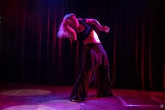
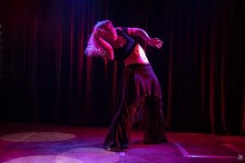
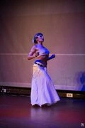
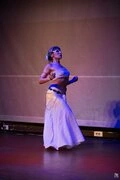

A curated selection of solo performances and improvisation works (2012–2025). My artistic practice moves between Tribal Fusion, FCBD®, Butoh, subtle influences from Indian dance and contemporary improvisation, into a deeply personal movement language blending precision and instinct, ritual presence and emotional vulnerability. I explore themes of memory, transformation, identity, and archetypal emotion, often drawing from Greek folklore and inner imagery. My performances are mostly improvised, evolving organically with each presentation, balancing structure and spontaneity. I am also engaged in reimagining and modernizing Eastern dances, seeking to retain their formal qualities while gently breaking their conventions to create a contemporary, expressive vocabulary.
Evangelia Batoglou - Artistic Portfolio
Tou Thanatou Paraggeila [I Ordered from Death] (2025)
A performance exploring the relationship between life and death, using movement and sound to evoke the presence of the departed. Hybrid performance combining two versions of the same Greek lament: first as a "traditional style" choreography in FCBD® format, and then as a solo fusion reinterpretation inspired by Rotting Christ's adaptation. The work travels from collective ritual to individual catharsis — from grounded, synchronized rhythm to fragmented, ecstatic motion. Blending tribal vocabulary, butoh-inspired transformation, and emotional ferocity, the piece explores death not as an end, but as a state of transition and awakening. A visceral embodiment of mourning, power, and transcendence.
Videos part A (traditional style) part B (contemporary fusion)
Gallery

Come Kali Come (2022)
Solo performance to the song by Lebanon Hanover. An immersive and deeply embodied interpretation where darkness and desire merge into a single pulse. Drawing on butoh-inspired distortion and gestural nuances reminiscent of Indian ritual movement, the body becomes invocation — a shifting form between chaos and devotion. Sensual yet unsettling, the piece channels transformation through trembling stillness, broken rhythm, and gaze-driven intensity.
Video Full Performance
Gallery
 

The Mystic's Dream (2023)
Solo performance to Loreena McKennitt's "The Mystic's Dream", danced while 32 weeks pregnant. A meditative embodiment of creation and vulnerability — the body as both vessel and spirit, carrying two rhythms at once: heartbeat and breath. Slow, expansive movement blends tribal flow, inner stillness, and awareness, evoking the sacred connection between life, intuition, and transformation. A deeply personal piece, performed as an offering rather than choreography — an honest moment of presence within limitation and grace.
Video Full Performance
Gallery
Nocturnal Hecate (2024)
Solo performance to Sakis Tolis' "Nocturnal Hecate" (Daemonia Nymphe Cover). My first appearance after giving birth to my daughter, Hecate — danced nine months postpartum. A ritual of return, invoking the goddess of thresholds and transformation. Through tribal grounding, butoh distortion, and raw physical release, the body reclaims its wild power and mystery. The piece unfolds between exhaustion and ecstasy, exploring motherhood not as softness but as ferocity, instinct, and rebirth through darkness.
Video Full Performance
Gallery
KYMA - LIANOCHORTAROUDIA (2024)
A reinterpretation of a ritualistic, tribal industrial song from the mountains of Greece (by GIDIA) in FCBD® style, blending tribal movement with raw, mechanical energy. The work explores rhythm, tension, and collective improvisation, balancing folk motifs with contemporary experimental textures. The performance emphasizes expressive gesture, ensemble awareness, and ritualized presence, creating a bridge between heritage and personal interpretation. The final section features faster, energetic movement inspired by Lianochortaroudia by Koza Mostra, adding a lively, folk-infused conclusion.
Video Full Performance
Gallery
Death Is the Ultimate Woman (2019)
Solo improvisation to Monica Richards' "Death Is the Ultimate Woman". A dark pagan-inspired improvisation emphasizing the archetypal feminine, ritual embodiment, and transformation. Movement draws on distortion, slow unfolding gestures, and raw expression, exploring the interplay between mortality and female power. An early exploration of presence, ritual, and the body as vessel for mythic and emotional storytelling.
Video Full Performance
Gallery


Gaia's Metamorphosis (2022)
Solo performance, exploring ritual, transformation, and primal connection to the earth. The work channels ancient forces and invocative energy, blending slow, meditative movement and dynamic intensity. Gesture, stillness, and ritualized presence create a physical invocation of mythic and natural archetypes, where the body becomes both altar and medium.
Video Full Performance
Gallery
 

NEMESIS [Group Collaboration] (2023)
Collaborative group choreography with Jasmin Kalathaki, performed to Rotting Christ's "NEMESIS". The initial concept and music selection were mine. A powerful work blending warrior-inspired movements from traditional Greek dances with the fluidity and grace of Tribal Fusion, emphasizing female presence and ritual energy. The choreography balances collective strength and individual expression, merging heritage, contemporary technique, and primal intensity.
Video Full Performance
Gallery

ZVARA (2019 – re-staged in 2025)
Collaborative choreography in FCBD® style. I had the initial idea and concept for choreographing this song, which was implemented by Jasmin Kalathaki. The piece has been re-staged and re-choreographed recently, and documentation includes both the original full performance and a short excerpt from the new version. The work blends Greek folklore motifs, folk instruments (clarinets), ensemble awareness, and ATS sensibility, highlighting ritualized gesture, collective energy, and expressive presence. The music is a rock reinterpretation of a traditional song, creating a dynamic interplay between heritage, contemporary sound, and group movement.
Videos Full Initial Performance Re-staged Excerpt
Gallery
Improvisations in Nature (2022–2025)
A series of solo improvisations filmed outdoors, exploring movement, space, and sensory awareness. These short studies highlight my personal improvisational practice, meditative engagement with environment, and experimental exploration of gesture, rhythm, and presence.
Videos Improv to "Ipeirotiko" Improv to "Majo tachi no komori-uta" (Witche's Lullaby) Improv to "Se Psilo Vouno" (Rizitiko)
Additional Resources Complete list of selected solo performances